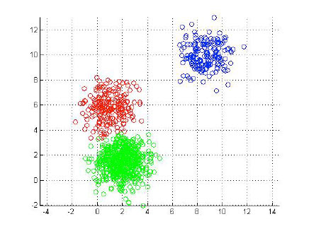
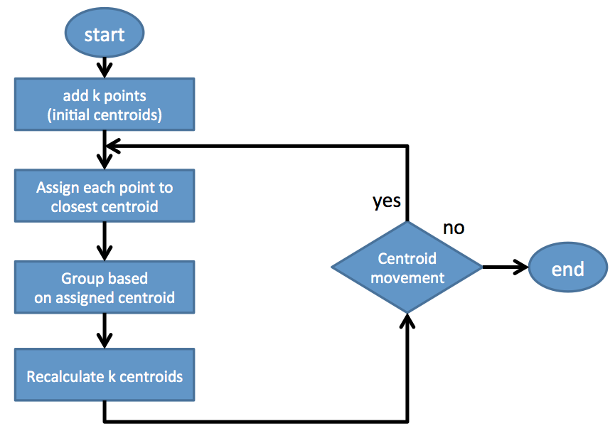
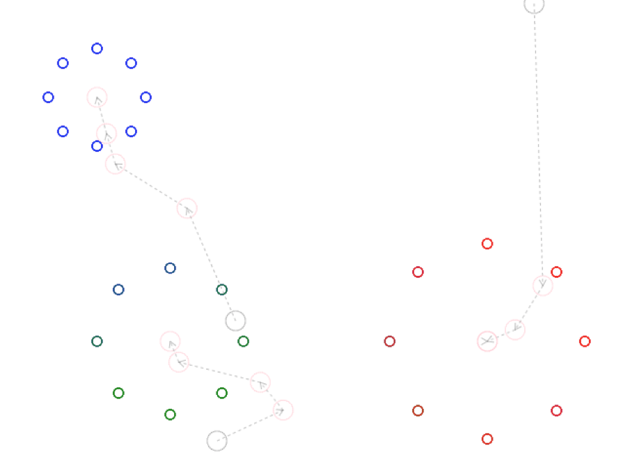
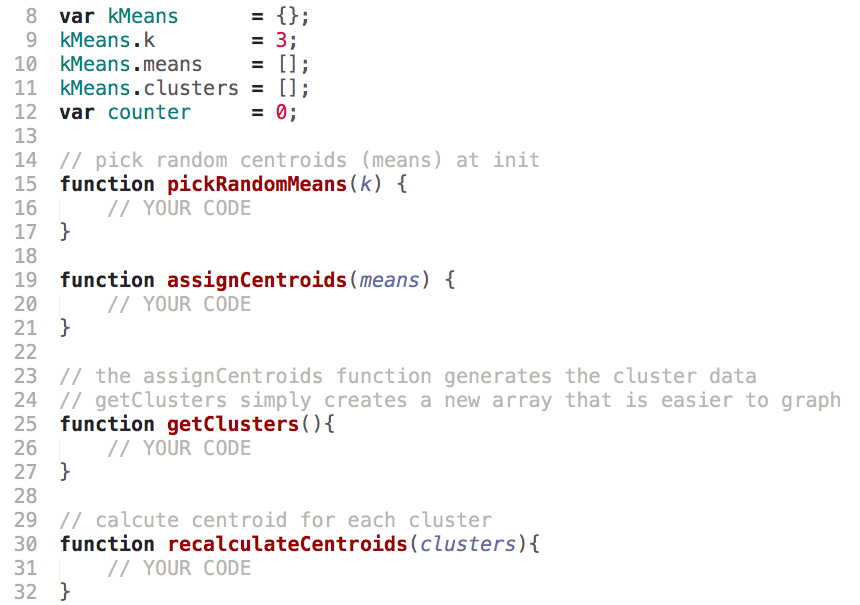
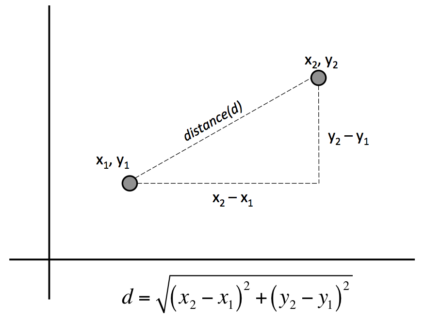

Machine Learning
K-Means

K-Means
K-Means Algorithm
- Place K points into the space represented by the objects. These points represent initial group of centroids.
- Assign each object to the group that has the closest centroid.
- When all objects have been assigned, recalculate the positions of the K centroids.
- Repeat Steps 2 and 3 until the centroids no longer move.
K-Means Algorithm
Visualization
Active Learning
Write an implementation of K-Means …
Active Learning - Pick Random Means
Active Learning - Assign Centroids
Distance Between Two Points
Active Learning - Get Clusters
Active Learning - Recalculate Centroids
Centroid